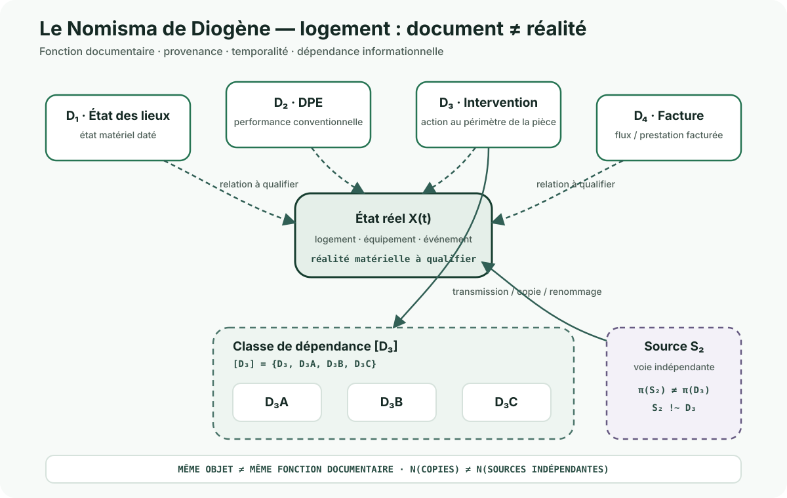

État des lieux
Décrit un état matériel dans un cadre, une date et un contradictoire déterminés. Il ne remplit pas la même fonction qu'un diagnostic énergétique.
Méthode transversale · Information · Provenance
Appliqué au logement, le Nomisma distingue ce qui circule dans les dossiers de ce qui est effectivement établi sur un logement, un équipement, une intervention ou un événement.
Un document peut être authentique, correctement nommé, transmis à plusieurs acteurs et accepté par plusieurs systèmes sans démontrer, à lui seul, toute la réalité à laquelle il est rattaché. L'enjeu n'est pas de soupçonner le document : il est de qualifier précisément ce qu'il établit, à quelle date, dans quel périmètre et par quelle relation.
VALEUR DE CIRCULATION ≠ VALEUR PROBATOIRE
ACCEPTÉ PAR UN SYSTÈME ≠ ÉTABLI DANS LE RÉEL
Décrit un état matériel dans un cadre, une date et un contradictoire déterminés. Il ne remplit pas la même fonction qu'un diagnostic énergétique.
Décrit une performance énergétique conventionnelle à partir d'une méthode et de données propres au diagnostic. Il ne devient pas un état des lieux matériel.
Une attestation, un bon ou un compte rendu peut documenter une action réalisée au périmètre de la pièce. Il ne prouve pas automatiquement l'état futur de l'équipement.
Documente un flux économique ou une prestation facturée. Le paiement d'une ligne ne suffit pas, à lui seul, à établir toutes les caractéristiques techniques de l'intervention.

Que permet réellement d'établir cette pièce ? Une identité, une date, un état, une performance conventionnelle, une intervention, un montant, une réception ?
Les documents sont-ils indépendants ou dérivent-ils d'une même source ? Une pièce renommée ou transmise à trois organismes reste une seule chaîne informationnelle si son origine est commune.
Une pièce exacte à t₁ ne décrit pas automatiquement l'état à t₂. Un remplacement, une panne, une réparation ou une nouvelle mesure peuvent modifier l'objet réel.
DOCUMENT ≠ RÉALITÉ
MÊME OBJET ≠ MÊME FONCTION DOCUMENTAIRE
RÉPLICATION DOCUMENTAIRE ≠ CORROBORATION INDÉPENDANTE
N(FICHIERS) ≠ N(SOURCES) ≠ N(OBSERVATIONS INDÉPENDANTES)
UNKNOWN = RÉSULTAT VALIDE
objet / événement réel
↕ relation à qualifier
document-source
↓ provenance
copies / reprises / systèmes
↓
statut : ÉTABLI · DIVERGENT · INDÉTERMINÉ · NON RECHERCHÉ
Le nombre de documents augmente la traçabilité documentaire seulement si leur provenance et leur fonction sont connues. Il n'augmente pas mécaniquement le niveau de preuve.
Cette page constitue une application sectorielle. La présentation générale du concept, son origine métaphorique et le graphe de dépendance sont publiés dans Muze-X · Émotions & ressources ouvertes.
Le nom renvoie à une tradition antique associée à Diogène de Sinope et à l'altération de la monnaie. Les récits concernant l'oracle de Delphes existent sous plusieurs versions et leur historicité précise reste incertaine.
Elle ne transforme pas une divergence en accusation, ne suppose pas qu'un document absent de notre corpus n'existe pas ailleurs et ne remplace ni expertise technique, ni procédure contradictoire, ni qualification juridique. Elle sert à empêcher qu'une convention documentaire soit confondue avec une réalité matérielle sans relation démontrée.
← Retour à Comprendre l'information · Retour à l'observatoire →